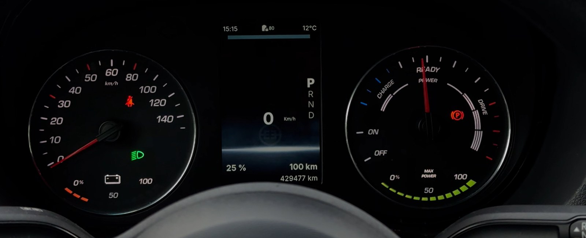
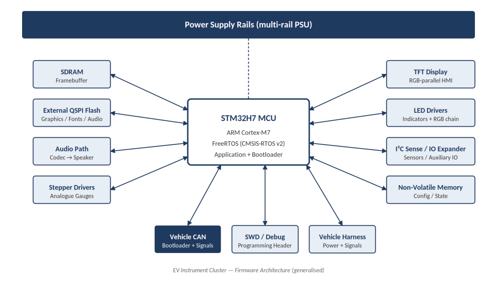
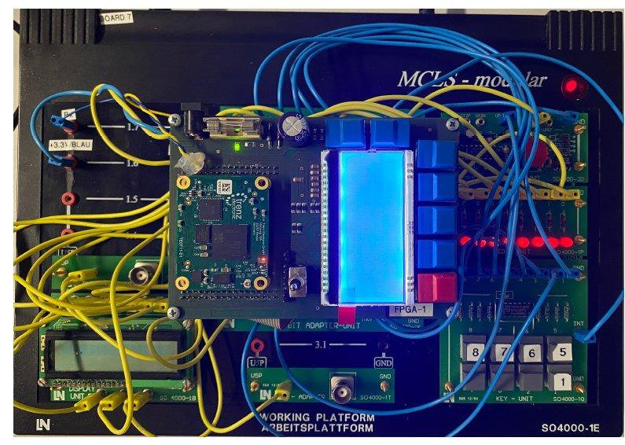
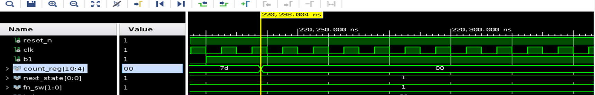
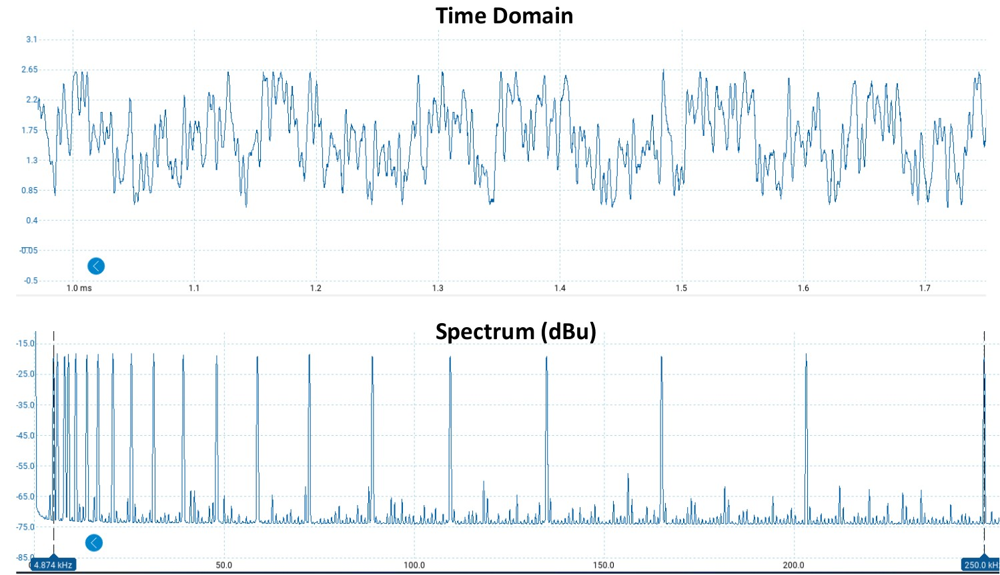
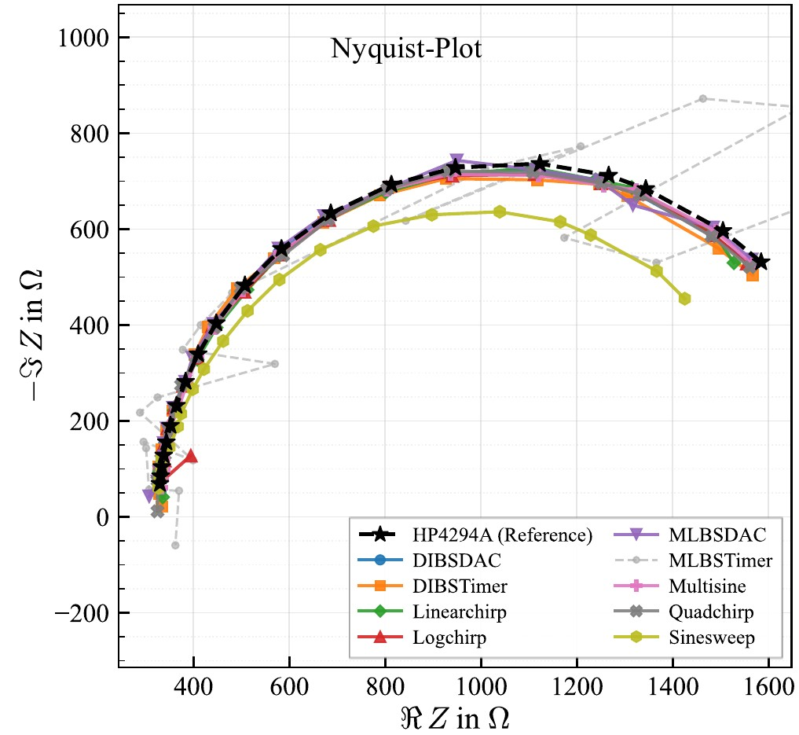

About 10 years of embedded firmware in C and C++, from requirements and architecture through design, implementation and testing to series production.
Most recently I was the sole firmware owner of an electric vehicle instrument cluster, which I took to production
in about 70–80 vehicles, together with the CAN bootloader and the OTA update system for the fleet.
70–80vehicles in the field with firmware I worked on
OTAfleet updates over LTE + CAN
M.Sc.Embedded Systems · TU Chemnitz
// 01 how I work
From requirements to series production
01
REQUIREMENTS
Structured requirement documents, in direct contact with customers. Hardware requirements for schematic and PCB.
02
ARCHITECTURE
MCU and component selection, CAN interfaces between ECUs, architecture documents for every product.
03
DESIGN
Modules and state machines, architecture and API documentation for my modules, technical reviews.
04
IMPLEMENTATION
C and C++ on STM32 and ESP32, FreeRTOS, drivers, TouchGFX GUI, MISRA-C, code reviews.
05
TESTING
Unit tests, HIL bench with recorded CAN traffic replayed against the real hardware, test cases traced to requirements.
06
RELEASE & FIELD
Prototype to production, CAN bootloader and OTA updates, root-cause analysis on the bench and in the vehicle.
V-model: every test case traced back to its requirement · phased releases
// 02 projects
What I have built
[ production ]
EV instrument cluster: from prototype to series production
E-Works Mobility GmbH, Ismaning · 2022 – 2026
E-Works Mobility converted diesel commercial vehicles to electric drive. I was the sole firmware owner of the
instrument cluster. I rebuilt the OEM's complete cluster alone by reverse-engineering its hardware and software
(the OEM had a full team for it), added new functions, integrated it into our vehicle and took it to production
in about 70–80 vehicles.

> the cluster in the vehicle: stepper gauges, LEDs, TouchGFX display

> firmware-visible architecture (generalised)
Platform: STM32H7 with FreeRTOS, 480×800 RGB TFT with a TouchGFX GUI in C++ and SDRAM framebuffer, graphics, fonts and audio in external QSPI flash, SAI audio codec, stepper-motor gauges, LED chains, ADAS and safety warnings.
CAN: communication with every ECU in the vehicle, data from the VCU and BMS, commands exchanged with the VCU. I decoded the OEM's CAN messages and defined the CAN interfaces between the cluster, the junction box and the telematics unit.
Hardware: selected the MCU, flash, LCD and LED drivers, supplied the hardware requirements for schematic and PCB, reviewed schematics, brought up the boards and debugged at signal level with oscilloscope and logic analyzer.
Testing: built an automated hardware-in-the-loop bench test with PCAN-Explorer: recorded vehicle CAN traffic replayed against the real hardware, with pass/fail reports, as part of the release validation.
CC++STM32H7FreeRTOSTouchGFXCANQSPIDMAHIL testing
[ in the field ]
CAN bootloader and over-the-air updates for the fleet
E-Works Mobility GmbH · deployed in about 70–80 vehicles
The wire harness and CAN were the only access to the ECUs in the vehicle, so updates had to work reliably over CAN.
CAN bootloader: composite image across internal and external QSPI flash, adapted open-source ISO-TP library for multi-frame transfer, CRC32 integrity check on every boot, recovery from interrupted updates.
OTA system: C++ application on the telematics unit (Raspberry Pi, Linux) with WireGuard VPN. It receives new firmware over LTE, verifies it and flashes the ECUs over CAN.
Low-voltage junction box (STM32F4): worked on it together with colleagues and added overcurrent detection, fault recovery and reporting, safe-state handling, bootloader-side update support and a hardware-version layer (one binary for all PCB revisions).
boot.c (simplified idea)
voidboot_main(void)
{
const app_hdr_t *hdr = APP_HEADER;
/* new image waiting? flash it over ISO-TP */if (update_pending()) {
receive_image_over_can();
}
/* check the image on every boot */if (crc32(hdr->start, hdr->len) != hdr->crc) {
enter_recovery(); /* interrupted update */
}
jump_to_app(hdr->start);
}
Vehicle dataloggers and an Android diagnostic app over Bluetooth
Intellipredikt Technologies, India · 2018 – 2021 · Technical Lead
Our hardware box, a communication device, connects to the vehicle bus and logs and forwards the data.
A production Android app connects to the box over Bluetooth and talks to the vehicle through it,
for example to read and clear diagnostic trouble codes (DTCs).
Datalogger firmware: CAN / J1939, ISO 15765 and UDS stacks for production dataloggers, for customers such as Fiat Chrysler, Eaton, Nissan and Dearborn Group.
Android diagnostic app for Dearborn Group: Bluetooth link to the box, read and clear DTCs, RP1227 API ported from Windows to Android, CAN bus statistics.
Asset-monitoring gateways for Wipro (GSM, Bluetooth).
Led and mentored a small embedded team, worked along the V-model from requirements to traced test cases, and was in direct contact with the customers.
COMM DEVICE
VEHICLE DATA INTERFACE
CAN / J1939 ISO 15765
◉ VEHICLE SCAN
CONNECTED · J1939 / BT
Waiting for vehicle data
READ DTC
CLEAR
Preparing scan loop...
> illustration: vehicle → comm device (CAN) → Bluetooth → Android app reads and clears DTCs
CANJ1939ISO 15765UDSDTC read / clearBluetoothAndroidRP1227Team lead
[ wireless ]
BLE 5.0 mesh stack for Autoliv
Intellipredikt Technologies, India · seat-belt monitoring
I delivered a BLE 5.0 mesh stack for Autoliv's seat-belt monitoring system.
BLE: GATT services, advertising, pairing and mesh networking.
> illustration: seat-belt nodes report their status through the BLE mesh to the gateway
BLE 5.0MeshGATTAdvertisingPairingEmbedded C
[ public infrastructure ]
Wireless traffic signal control for the Tamil Nadu Police
Analog and Digital Labs, India · 2017 – 2018
My main project at Analog and Digital Labs: a wireless system to control traffic signals for the Tamil Nadu Police.
System: the central traffic control system connects to an access point; the signal units are Wi-Fi slave devices connected to it.
Firmware: wireless control over Wi-Fi, SPI-driven output control of the signal lamps.
Hardware: PCB design for the system.
Also built an LED scroll board with audio.
> illustration: the central traffic control system talks through an access point to the Wi-Fi slave nodes at each signal
Wi-FiSPIEmbedded CPCB designLamp control
[ IoT · research ]
Growthboxes: remote-controlled growing boxes on ThingsBoard
TU Chemnitz · Research Assistant · 2022
Plants, insects and more are grown inside the boxes. The firmware measures the conditions in each box
and controls it, and the status and controls of the boxes are on ThingsBoard.
Box controller: firmware on a 32-bit MCU reading temperature and humidity sensors and controlling pumps and actuators.
IoT: ESP32 devices sending data over MQTT to ThingsBoard, with dashboards for status and remote control of the devices.
> illustration: growth box with sensor and pump → controller → MQTT → ThingsBoard
Industrial dataloggers: many machines, one central receiver
Lakshmi Info Tech, India · 2016 – 2017
My first project: dataloggers on several machines collect the machine data and send it over Wi-Fi
to a central router, which receives the data from all machines in one place.
Datalogger firmware: data collection on each machine and Wi-Fi transfer to the central router.
Energy monitoring for Texmo: Modbus energy meters read on a Raspberry Pi.
> illustration: dataloggers on each machine → Wi-Fi → central router → machine data
I design my own boards in KiCad, including 4-layer prototypes, and order them myself.
The impedance measurement board (AD5933 with STM32) came out of the preparation phase of my master's thesis.
The 32-channel force sensor system was my M.Sc. research project (grade 1.3): I designed the PCB, wrote the
ESP32 firmware and tested the system.
TU Chemnitz · M.Sc. course “Hardware Acceleration using FPGA” · Xilinx Artix-7 · Vivado · ModelSim
A digital stopwatch and countdown timer in synthesizable VHDL on a Xilinx Artix-7, running on the lab platform with push buttons and a character LCD. A start menu on the LCD selects the stopwatch or the timer.
Control: FSM-based control with input debouncing and lap-time storage.
Display: parallel driver for a 20×4 ST7036 character LCD.
Top level: an arbiter between the stopwatch and the timer function.
Verification: my own ModelSim testbenches and post-synthesis simulation in Vivado.
stopwatch.vhd (simplified idea)
type state_t is (IDLE, RUNNING, PAUSED);
signal state : state_t := IDLE;
process (clk)
beginifrising_edge(clk) thencase state iswhen IDLE =>
if btn_start = '1'then
state <= RUNNING;
end if;
when RUNNING =>
if tick_10ms = '1'then
time_cnt <= time_cnt + 1;
end if;
if btn_lap = '1'then-- store lap
lap_mem(lap_idx) <= time_cnt;
end if;
if btn_stop = '1'then
state <= PAUSED;
end if;
when PAUSED =>
if btn_start = '1'then
state <= RUNNING;
end if;
end case;
end if;
end process;

> Artix-7 module on the lab platform

> Vivado simulation: clock, button, counter, function select and FSM state
Comparative Study of Excitation Signals for Bioimpedance Measurement on STM32 Microcontrollers: Performance and Energy Efficiency Analysis
TU Chemnitz, Professorship of Measurement and Sensor Technology · 2026 · grade 1.7
Application: portable, battery-powered bioimpedance spectroscopy devices, which measure how biological
tissue reacts to a small AC signal over many frequencies. Such a device needs the right microcontroller and the right
excitation signal to get both accurate measurements and low power consumption.
My thesis compares nine excitation signals (multisine, DIBS, MLBS, linear, logarithmic and quadratic chirp, sine sweep)
on six STM32 microcontrollers (F303, L476, L4P5, L552, U5A5, G474), each with DAC-based and timer-based generation,
measured with the I-V method and FFT from 1 to 250 kHz.
> my signal chain on the STM32: lookup table → DMA → DAC → DUT → ADC → DMA → FFT → impedance
Signal generation: frequencies log-spaced and aligned to the FFT bins, quantized to 12 bit in MATLAB and exported as C arrays. On the STM32 the table streams via DMA into the DAC, triggered by a timer at 2 MHz. Binary signals (DIBS, MLBS) also run without a DAC: DMA writes the timer's compare register and the PWM output on a GPIO carries the signal.
Acquisition: voltage and current captured with ADC1 and ADC2, timer-triggered, via DMA; impedance by FFT.
Verification: every signal checked on the PicoScope in time domain and spectrum against the MATLAB simulation, including the effect of the internal RC clock (HSI) against the external crystal (HSE).
Power and runtime: current measured with a Nordic Power Profiler Kit II and an ST-LINK-V3PWR (both agree within 0.1 mA); runtime with the ARM DWT cycle counter.
Accuracy: validated against an HP4294A precision impedance analyzer on three test loads, including a Cole circuit as a tissue model; results exported over UART to CSV.

> real capture: 20-frequency multisine from the STM32 DAC on the PicoScope

> result: Cole circuit, all signals vs. HP4294A reference
// key results
Most accurate: on the Cole circuit, multisine had the lowest magnitude deviation (0.89 %) and DIBS-DAC the lowest phase deviation (0.42°). DAC-based signals beat their timer-based versions.
Power: the signal type hardly matters; the MCU architecture does.
Runtime: the Cortex-M33 parts (L5, U5) are fastest, about 40 ms for 20 frequencies. Sine sweep is about 3× slower.
Limits found: MLBS works with the DAC but fails with the timer (GPIO too slow for the fast switching); sine sweep loses about 5 % to DAC settling.
Recommendation: STM32L5 with multisine or DIBS-DAC for battery-powered devices, STM32U5 for a balance of low power and speed, STM32G4 for high accuracy thanks to its math accelerators (CORDIC, FMAC) and high-resolution timer.
Firmware for EV conversion ECUs: instrument cluster (sole owner), CAN bootloader, OTA, junction box functions, HIL bench testing. Working student until Sep 2023, then full-time. The company closed in July 2026 because of insolvency.
Jan 2022 – Sep 2022
Research Assistant (Software)
TU Chemnitz, Germany
Growthboxes project: boxes for growing plants and insects. Firmware on a 32-bit MCU reading temperature and humidity sensors and controlling pumps and actuators; ESP32 IoT devices with MQTT, status and controls on ThingsBoard.
Aug 2018 – Sep 2021
Technical Lead
Intellipredikt Technologies, India
Joined as Senior Software Engineer, Technical Lead from June 2019. Vehicle dataloggers (CAN, J1939, UDS), Android diagnostic app over Bluetooth (read and clear DTCs), BLE 5.0 mesh for Autoliv, team lead and customer contact.
Dec 2017 – Aug 2018
Embedded Software Developer
Analog and Digital Labs, India
Main project: wireless traffic signal control for the Tamil Nadu Police (Wi-Fi, SPI lamp control, PCB design). Also an LED scroll board with audio.
Jun 2016 – Dec 2017
R&D Engineer
Lakshmi Info Tech, India
First project: dataloggers on several machines sending data over Wi-Fi to a central router. Modbus energy monitoring on Raspberry Pi for Texmo.
// 04 skills
What I work with
PROGRAMMING
C, C++, Python, MATLAB
MCU
ARM Cortex-M (STM32 F4/H7), ESP32, NXP, TI, Silicon Labs; Raspberry Pi
RTOS
FreeRTOS (CMSIS-RTOS v2), TI-RTOS, Linux (application level); bootloaders, OTA, interrupts, DMA, caches, state machines, fault handling
AUTOMOTIVE
CAN, CAN FD, ISO-TP (ISO 15765), J1939, UDS; AUTOSAR and V-model
VS Code, STM32CubeIDE, TouchGFX, Git, GitLab CI/CD, Jira, Confluence, Doxygen
METHODS
Unit testing, HIL bench testing, MISRA-C, code reviews, requirements and design documentation, V-model, Agile/Scrum
LEARNING
Embedded Linux: Linux system programming, Buildroot, Yocto, Linux kernel modules and drivers
// 05 education
Where I studied
2021 – 2026
M.Sc. Embedded Systems
TU Chemnitz, Germany
Thesis (1.7): “Comparative Study of Excitation Signals for Bioimpedance Measurement on STM32 Microcontrollers: Performance and Energy Efficiency Analysis”, for portable bioimpedance spectroscopy devices. Research project (1.3): ESP32 measurement system for 32 force sensors, including PCB design. Coursework in real-time systems, automotive platforms (AUTOSAR, CAN, FlexRay, Automotive Ethernet), DSP, FPGA/VHDL, verification and test, network security.